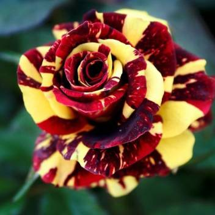

TẾT TRUNG THU

Chuyện kể rằng, ngày xưa, trên trời có một nàng tiên nữ tên là Hằng Nga, nàng rất xinh đẹp và chăm chỉ cai quản cả một Vầng Trăng sáng lung linh. Nàng rất yêu trẻ con nên mơ ước của nàng là được ghé xuống trần gian chơi đùa cùng các em nhưng do quy định của tiên giới không cho phép.
Một hôm, Ngọc Hoàng tổ chức cuộc thi “Làm bánh ngày rằm” vào ngày rằm tháng 8 – là ngày mà trăng tròn và sáng nhất trong năm, người nào làm được loại bánh ngon nhất, đẹp nhất và lạ mắt nhất sẽ được trọng thưởng bất kỳ điều gì mình muốn.


Hằng Nga rất thích thú, háo hức tham gia cuộc thi ngay. Khi xuống trần gian để tham khảo, nàng gặp được Cuội – một chàng trai chuyên gia nói dóc, cứ mỗi tối Cuội lại tụ hợp các em nhỏ dưới gốc cây đa đầu làng mà kể chuyện tầm phào.